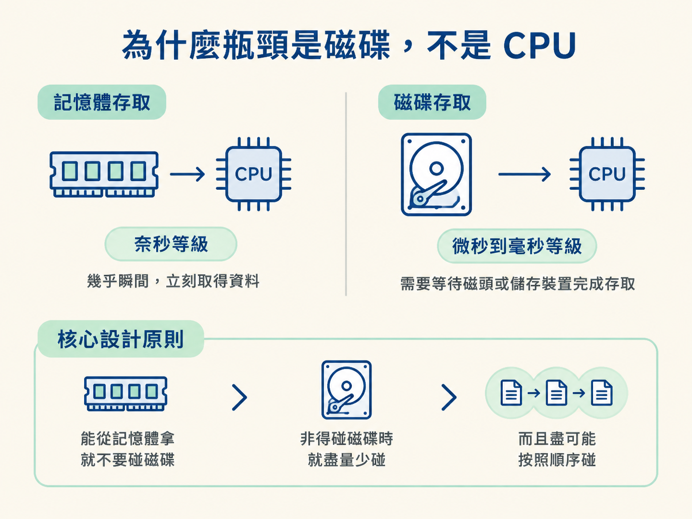
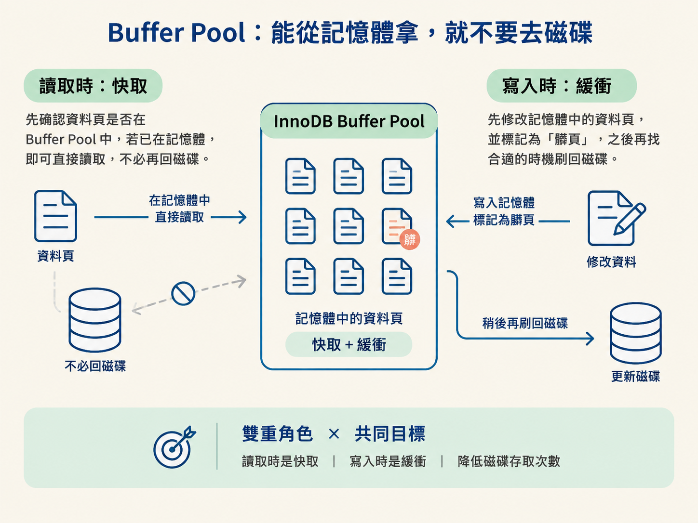
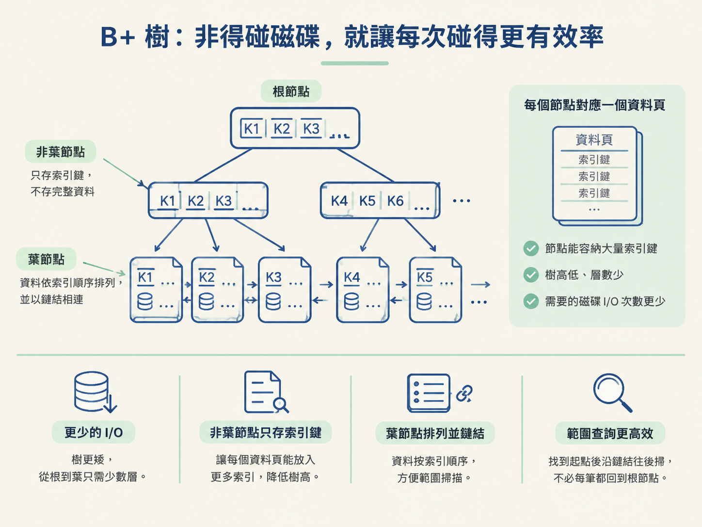
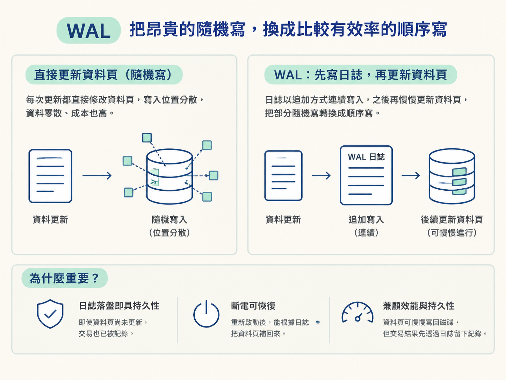
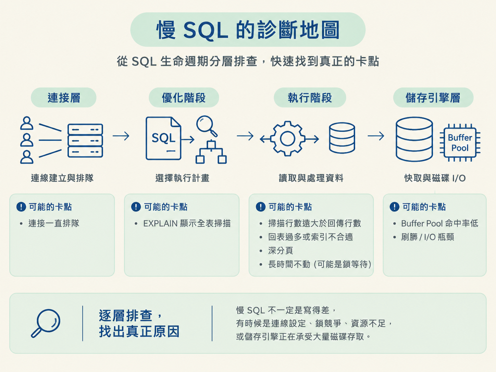

前幾步我們把 MySQL 拆成兩層，走過一條 SQL 的生命週期，也比較了 InnoDB 與 MyISAM。到了這裡，你可能已經記住不少名詞；但面試官若追問「MySQL 為什麼要這樣設計」，很多人只能逐項回答：因為有 Buffer Pool、因為使用 B+ 樹、因為需要 WAL。
這些答案都沒有錯，問題是它們彼此像散落在桌上的拼圖，還沒有拼成一張圖。這一步要做的，就是找出那條能把各個機制串起來的主線：MySQL 幾乎所有的底層設計，最後都在想辦法減少磁碟 I/O。
資料庫是系統中最脆弱、也最難擴展的一環。一條慢 SQL，就可能拖慢整個叢集。因此，理解 MySQL 時，不要只背「它有哪些元件」，還要一直追問：「這個設計，是在避免哪一次磁碟存取？」
先想像兩種等待：一種是 CPU 或記憶體立刻把資料交給你；另一種是你必須等磁碟的磁頭或儲存裝置完成存取。記憶體存取大約是奈秒等級，磁碟存取卻是微秒到毫秒等級，兩者相差好幾個數量級。
這代表同一段程式邏輯，如果每一步都要等待磁碟，CPU 再快也只能閒著。真正拖慢系統的，往往不是「計算太複雜」，而是「一直在等資料進出磁碟」。
但資料又不能永遠只放在記憶體裡。記憶體斷電後內容就會消失，想讓資料真正持久，就必須寫入磁碟。於是 MySQL 的設計哲學可以濃縮成一句話：
能從記憶體拿，就不要碰磁碟；非得碰磁碟時，就盡量少碰，而且盡可能按照順序碰。
抓住這句話，後面看似分散的機制就會各自找到位置。

現在把這個節點學過、以及後面會遇到的機制，重新放回同一條主線上看一次。
Buffer Pool 是 InnoDB 最重要的記憶體區域之一。讀取資料時，InnoDB 會先確認需要的資料頁是否已經在 Buffer Pool 裡。
如果資料頁已經在記憶體中，就能直接讀取，不必再次存取磁碟。這就像常用的文件放在桌面上，而不是每次需要時都跑去倉庫找。
寫入時也不一定要立刻修改磁碟上的資料頁。InnoDB 可以先修改記憶體中的版本，並把它標記成「髒頁」，之後再找合適的時機刷回磁碟。這樣一來，每次寫入就不必原地等待磁碟完成。
所以 Buffer Pool 同時扮演兩個角色：讀取時是快取，寫入時是緩衝。兩者的共同目標都是降低磁碟存取次數。

索引選擇 B+ 樹，也可以從 I/O 的角度理解。B+ 樹的節點通常對應一個資料頁，而且每個節點能放入很多索引鍵，因此整棵樹的高度很低。
樹越矮，從根節點走到葉子節點需要經過的層數就越少，也就代表需要的磁碟 I/O 次數越少。這是 B+ 樹適合資料庫索引的第一個原因。
B+ 樹的非葉子節點只存索引鍵，不直接存完整資料。這樣同一個資料頁就能容納更多索引，樹的高度可以再降低。到了葉子節點，資料則依照索引順序排列，葉子之間還會用鏈結串起來。
因此，範圍查詢找到起點後，可以沿著葉節點鏈結往後掃，不必每讀一筆資料就回到根節點重新走一次。這些設計看起來各有用途，但核心目標相同：讓查詢用更少的磁碟 I/O 找到更多資料。

如果每次更新都直接修改磁碟上的資料頁，寫入位置可能分散在磁碟不同區域。這種寫法稱為隨機寫，資料零散、成本也高。
WAL（Write-Ahead Logging，預寫式日誌）採用另一種順序：先寫日誌，再更新資料頁。日誌通常採追加方式寫入，寫入位置較為連續，因此能把部分隨機寫轉換成順序寫。
只要日誌已經落盤，即使對應的資料頁還沒來得及更新，交易也可以視為已經具備持久性。萬一系統斷電，重新啟動時就能根據日誌把資料頁補回來。
這就是 WAL 的關鍵價值：資料頁可以慢慢刷回磁碟，但交易結果先透過日誌留下紀錄。它同時兼顧了寫入效能與資料持久性。

InnoDB 的聚簇索引，讓主鍵索引的葉子節點直接存放整行資料。因此，透過主鍵找到葉子節點後，通常就能拿到完整資料，一趟完成。
但使用輔助索引時，情況可能不同。如果查詢還需要索引中沒有的欄位，資料庫就得先從輔助索引取得主鍵，再回到主鍵索引尋找完整資料。這個額外步驟稱為回表。
回表不一定代表查詢有問題，但它代表多了一趟查找，可能帶來更多 I/O。若查詢需要的欄位全部都已經包含在索引中，就可以直接從索引得到結果，不必回到主鍵索引，這就是覆蓋索引。
之後會學到的索引下推、深分頁優化，本質上也可以放回同一條主線理解：讓查詢盡可能在索引中完成，少回表、少掃描，也就少做幾次磁碟 I/O。
理解這條主線後，MySQL 架構圖就不再只是名詞清單，而會變成一張「慢 SQL 定位圖」。拿到一條慢查詢時，可以沿著 SQL 的生命週期逐層追問：它是在排隊？選錯執行計畫？回表太多？等待鎖？還是真的卡在磁碟 I/O？
| 症狀 | 可能卡在哪一層 | 往哪個方向查 |
|---|---|---|
| 連線一直排隊、被拒絕 | Server 層的連接層 | 連線池設定、連線洩漏、最大連線數 |
| EXPLAIN 出現 type=ALL | Server 層的優化階段 | 索引設計、條件是否讓索引失效 |
| 掃描行數遠大於回傳行數 | 執行階段 | 索引選擇、回表次數、深分頁 |
| 長時間卡住不動 | 執行階段的鎖等待 | 行鎖／間隙鎖衝突、大交易 |
| 磁碟讀取暴增、回應變慢 | 儲存引擎層 | Buffer Pool 命中率、刷髒、I/O 瓶頸 |
這張表的實際用途，是避免你一看到「SQL 很慢」就立刻開始改索引。你可以先把問題分流：
也就是說，問題不一定是 SQL 寫得差。有時候真正出問題的是連線設定、鎖競爭、資源不足，或儲存引擎正在承受大量磁碟存取。

如果面試官問「MySQL 為什麼要這樣設計」，不要一開始就把 Buffer Pool、B+ 樹、WAL 一個個丟出去。可以先交代分層，再沿著生命週期說明，最後用磁碟 I/O 收束。
你可以這樣回答：
MySQL 分成 Server 層與儲存引擎層。一條 SQL 會依序經過連接、解析、優化與執行，最後由儲存引擎讀寫資料。因為磁碟遠比記憶體慢，所以底層設計的共同目標，就是減少磁碟 I/O：Buffer Pool 盡量讓資料留在記憶體，B+ 樹降低查找需要的頁面數，WAL 把隨機寫轉成較有效率的順序寫，而聚簇索引與覆蓋索引則減少回表。先講分層，再走生命週期，最後落到 I/O 主線，答案就會有清楚的骨架。
這個節點的四步，可以收束成一句話：MySQL 的架構與儲存引擎設計，都是圍繞「減少磁碟 I/O」展開的。
Server 層負責動腦，儲存引擎層負責動手；一條 SQL 依序走過連接、解析、優化、執行與資料存取；InnoDB 則透過聚簇索引與事務支撐線上交易，MyISAM 退居少數極端場景。
Buffer Pool、B+ 樹、WAL、覆蓋索引看似是不同主題，其實都在回答同一個問題：怎麼少碰磁碟、少等磁碟，或讓每次磁碟存取更有效率。
之後再學索引、事務、日誌與複製時，可以持續問自己：這個機制，是在省哪一次磁碟 I/O？